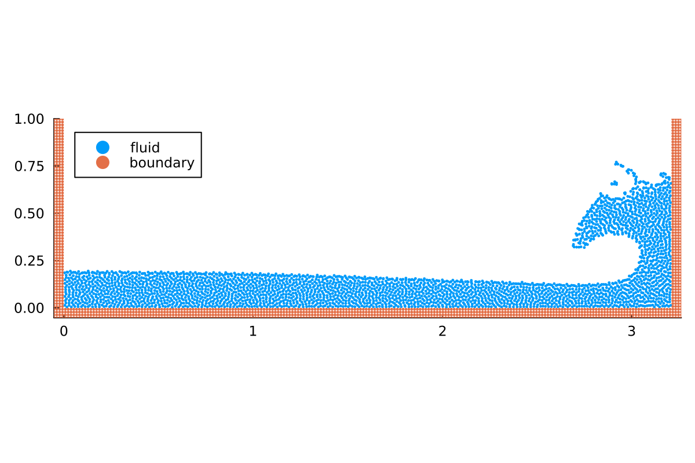

Modifying or extending components of TrixiParticles.jl within a simulation file
In this tutorial, we will show how to replace components of TrixiParticles.jl by custom implementations from within a simulation file, without ever cloning the repository.
First, we import TrixiParticles.jl and the time integration sub-package OrdinaryDiffEqLowStorageRK of OrdinaryDiffEq.jl, which we will use at the very end for the time integration.
using TrixiParticles
using OrdinaryDiffEqLowStorageRKLoad a simulation file
Instead of setting up the simulation from scratch, we run a pre-defined simulation file that implements a 2D dam break problem with Weakly Compressible Smoothed Particle Hydrodynamics (WCSPH). This tutorial works with any other simulation file as well, as long as it contains an assignment smoothing_kernel = .... By using trixi_include, we can overwrite variables defined in the simulation file. Here, we pass sol=nothing to overwrite the line that defines the variable sol, which is the line that runs the actual simulation. This way, we can import all variables and definitions from the simulation file without running the simulation right away. In this tutorial, we only need the definition of the particle spacing, but this approach works for any variable defined in the simulation file and is used in many pre-defined example simulation files. See the tutorial on setting up a simulation for details on the general structure of a simulation file.
trixi_include(@__MODULE__, joinpath(examples_dir(), "fluid", "dam_break_2d.jl"),
sol=nothing)[ Info: You just called `trixi_include`. Julia may now compile the code, please be patient.
┌ Info: The desired tank length in y-direction 4.0 is not a multiple of the particle spacing 0.015.
└ New tank length in y-direction is set to 4.005.Replacing components with custom implementations
In this tutorial, we want to replace the smoothing kernel used in the simulation by a custom implementation. A good starting point is to check out the available implementations in TrixiParticles.jl, then copy the relevant functions to the simulation file and modify them as needed.
Custom smoothing kernel
To implement a custom smoothing kernel, we define a struct extending TrixiParticles.AbstractSmoothingKernel. This abstract struct has a type parameter for the number of dimensions, which we set to 2 in this case.
struct MyGaussianKernel <: TrixiParticles.AbstractSmoothingKernel{2} endThis kernel is going to be an implementation of the Gaussian kernel with a cutoff for compact support, which reads
\[W(r, h) = \begin{cases} \frac{1}{\pi h^2} \exp(-(r/h)^2) & \text{for } r < 2h\\ 0 & \text{for } r \geq 2h. \end{cases}\]
Note that the same kernel in a more optimized version and with a cutoff at $3$ is already implemented in TrixiParticles.jl as GaussianKernel.
By looking at the implementation of existing kernels in TrixiParticles.jl, we can see that a kernel implementation requires three functions. TrixiParticles.kernel, which is the kernel function itself, TrixiParticles.kernel_deriv_div_r, which is the derivative of the kernel divided by $r$, and TrixiParticles.compact_support, which defines the compact support of the kernel in relation to the smoothing length. The latter is relevant for determining the search radius of the neighborhood search.
We implement kernel_deriv_div_r instead of kernel_deriv directly since this avoids an extra division in the hot loop. The functions TrixiParticles.kernel_deriv and TrixiParticles.kernel_grad are defined automatically by TrixiParticles from this method.
Both TrixiParticles.kernel and TrixiParticles.kernel_deriv_div_r must be safe for all $r \geq 0$, i.e., they must be zero outside of the compact support and must not divide by zero for $r = 0$. Here, we use ifelse to select zero outside of the compact support. Since $q / r = 1 / h$ for this kernel, the derivative divided by $r$ doesn't need a division by $r$. Kernels that do need a division by $r$ can divide by TrixiParticles.clamp_distance(r, h) instead to avoid divisions by zero.
function TrixiParticles.kernel(kernel::MyGaussianKernel, r::Real, h)
q = r / h
return ifelse(q < 2, 1 / (pi * h^2) * exp(-q^2), zero(q))
end
function TrixiParticles.kernel_deriv_div_r(kernel::MyGaussianKernel, r::Real, h)
q = r / h
return ifelse(q < 2, 1 / (pi * h^2) * -2 * exp(-q^2) / h^2, zero(q))
end
TrixiParticles.compact_support(::MyGaussianKernel, h) = 2 * hFor this kernel, we use a smoothing length of 1.2 times the particle spacing, which yields a similar kernel shape as the commonly used Wendland C2 kernel with a smoothing length of 1.59 times the particle spacing.
smoothing_length = 1.2 * fluid_particle_spacing
smoothing_length_wendland = 1.59 * fluid_particle_spacingWe can compare these kernels in a plot.
using Plots
plot(r -> TrixiParticles.kernel(WendlandC2Kernel{2}(), abs(r), smoothing_length_wendland),
-3 * fluid_particle_spacing, 3 * fluid_particle_spacing,
label="WendlandC2Kernel", xlabel="r")
plot!(r -> TrixiParticles.kernel(MyGaussianKernel(), abs(r), smoothing_length),
label="MyGaussianKernel")
This is all we need to use our custom kernel implementation in a simulation. We only need to replace the definition above by
smoothing_kernel = MyGaussianKernel()and run the simulation file again.
In order to use our kernel in a pre-defined example file, we can use the function trixi_include to replace the definition of the variable smoothing_kernel. The following will run the example simulation examples/fluid/dam_break_2d.jl with our custom kernel and the corresponding smoothing length.
julia> trixi_include(@__MODULE__, joinpath(examples_dir(), "fluid", "dam_break_2d.jl"); smoothing_kernel=MyGaussianKernel(), smoothing_length);
See Visualization for how to visualize the final solution. For the simplest visualization, we can use Plots.jl:
using Plots
plot(sol, ylims=(-Inf, 1))
This page was generated using Literate.jl.